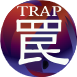

Chi tiết: Trap Card

1. Cấu tạo cơ bản của một thẻ bài Cạm Bẫy (Trap Card)
Bài cạm bẫy (Trap Card) là một loại thẻ bài thiết yếu trong Yu-Gi-Oh! TCG, được biết đến với khả năng tạo ra những bất ngờ chiến thuật mạnh mẽ bằng cách can thiệp vào lượt đi của đối thủ. Một lá bài Cạm bẫy có cấu tạo tương tự như các loại thẻ bài khác, nhưng nổi bật với màu nền tím hồng sẫm. Các thành phần chính bao gồm:
- Tên thẻ (Name): Nằm ở góc trên bên trái. Đây là phần tên của lá bài. Như các lá bài ma pháp, đối với một số lá bài cạm bẫy, tên của nó còn có thể nói lên cả tộc bài mà lá bài ma pháp đó hỗ trợ. (ví dụ: lá bài The Monarchs Awaken thì hỗ trợ cho tộc bài Monarchs )
- Cấp độ/Hạng (Level/Rank): Thẻ Cạm Bẫy không có cấp độ sao (Level) như các lá bài quái thú.
- Icon lá ma pháp: Nó nằm ở phía bên phải cùng hàng với tên của lá bài. 
- Icon loại Ma pháp: Đây là một phần quan trọng của 1 lá bài cạm bẫy. Vì trong YuGiOh! TCG có tất cả 3 loại bài cạm bẫy với các icon khác nhau. Nên icon các loại cạm bẫy giúp người chơi có thể phân biệt, sử dụng chức năng các lá bài một cách chính xác và đối phó, phản đòn đối thủ trong các đợt giao tranh.
- Hình ảnh minh họa: Vùng ảnh lớn ở giữa bài.
- Khung mô tả (Text Box): Đây là phần quan trọng nhất của cả lá bài. Chúng chứa hiệu ứng, chức năng của lá bài, giúp người chơi tạo ra các chiến thuật độc đáo và gây được nhiều khó khắn cho đối thủ trong trận đấu.
- Chỉ số Tấn công/Phòng thủ (ATK/DEF): Không giống như lá quái thú (Monster Card), thẻ Cạm bẫy không có chỉ số này.
- Mã số & Tem:Cũng như các lá bài khác, chúng có chức năng ghi lại số hiệu sản xuất và sản phẩm chứa lá bài cũng như chống hàng giả, được in chìm và có thể có màu vàng hoặc bạc tùy vào phiên bản sản xuất của lá bài.
2. Các loại Trap Card phổ biến
Có tổng cộng 3 loại Thẻ Cạm Bẫy khác nhau, được phân biệt bằng các biểu tượng (Icon) riêng biệt bên phải phía dưới tên lá bài:
- Normal Trap (Cạm bẫy Thường): Đây là loại cạm bẫy một lần sử dụng sau khi được úp xuống (Set) ở lượt trước.
- Continuous Trap (Cạm bẫy Vĩnh cửu): Những lá bài này duy trì hiệu ứng trên sân sau khi kích hoạt.
- Counter Trap (Cạm bẫy Phản công): Đây là loại cạm bẫy chuyên dùng để ngăn chặn các lá bài Ma Pháp Nhanh (Quick-Play Spell), các lá bài Cạm Bẫy khác & các quái thú có Hiệu Ứng Nhanh (Quick Effect) của đối thủ.
Không giống như các lá bài Ma Pháp (Spell Card), những lá bài có thể được chơi ngay trong luọt của người chơi, điểm đặc biệt của các lá Trap Card là chúng phải được úp xuống sân trong lượt đi trước, sau đó mới có thể được sử dụng ở lượt sau.
3. Normal Trap
Normal Trap (Cạm Bẫy Thường) là loại Cạm bẫy cơ bản và phổ biến nhất, không có biểu tượng đặc biệt.
- Chức năng: Cung cấp một hiệu ứng tức thời, mạnh mẽ và thường chỉ sử dụng được một lần. Sau khi hiệu ứng được giải quyết, lá bài sẽ được gửi xuống Mộ bài (Graveyard).
- Tầm quan trọng:Đây là xương sống của nhiều chiến thuật phòng thủ, giúp kiểm soát bàn đấu, phá hủy quái vật đối thủ (ví dụ: "Trap Hole"), hoặc vô hiệu hóa đòn tấn công (ví dụ: "Mirror Force").

4. Continuous Trap 
Continuous Trap (Cạm bẫy Liên tục) có biểu tượng vô cực bên phải phía dưới tên bài.
- Chức năng: Sau khi kích hoạt thành công, lá bài sẽ ở lại trên sân và hiệu ứng của nó được duy trì liên tục hoặc có thể kích hoạt nhiều lần trong các lượt sau, miễn là lá bài vẫn còn ngửa mặt trên sân.
- Tầm quan trọng: Continuous Trap đóng vai trò quan trọng trong việc thiết lập một hàng rào phòng thủ hoặc hỗ trợ chiến thuật lâu dài. (ví dụ, lá "Skill Drain" có thể vô hiệu hóa hiệu ứng quái vật trên sân cho cả hai người chơi.)
- Cần lưu ý: Nếu lá bài Continuous Trap bị phá hủy hoặc lật úp, hiệu ứng của nó sẽ không còn hiệu lực. Nhiều lá Continuous Trap có thể kích hoạt hiệu ứng nhiều lần trong một trận đấu, tạo ra lợi thế bền vững.
5. Counter Trap
Counter Trap (Cạm bẫy Phản công) có biểu tượng như một mũi tên phản lại đòn đánh bên phải phía dưới tên bài.
- Chức năng: Đây là loại Trap Card có độ ưu tiên cao nhất trong trò chơi còn gọi là Spell Speed, thường dùng để quyết định xem lá bài đó có được phép kích hoạt phản ứng lại với hiệu ứng trước đó không .Ví dụ: lá Normal Spell có Spell Speed là 1 vậy nên các lá Trap Card, Quick-Play Spell hay quái thú có Quick Effect (các hiệu ứng được tính có Spell Speed là 2 hoặc 3) đều có thể kích hoạt phản ứng (gọi là Chain) lại lá Normal Spell đó. Đối với Counter Trap, nó có Spell Speed là 3, cao nhất của cả trò chơi, nên ngoại trừ các lá Counter Trap khác, không một lá bài hay hiệu ứng nào có thể kích hoạt phản ứng lại các Counter Trap. Chức năng chính là phản công hoặc vô hiệu hóa việc kích hoạt các hành động khác (triệu hồi, kích hoạt hiệu ứng bài phép/bẫy, v.v.).
- Tầm quan trọng: Counter Trap là công cụ phòng thủ tối thượng, có khả năng ngăn chặn những bước đi quan trọng nhất của đối thủ một cách hiệu quả. Ví dụ nổi tiếng là "Solemn Judgment" (Phán quyết Nghiêm khắc).
- Cần lưu ý: Việc sử dụng Counter Trap đòi hỏi người chơi phải phán đoán thời điểm chính xác để tối đa hóa hiệu quả.